XII–XV века: Основание
Вязьма впервые упоминается в летописях в 1239 году. Город возник как пограничная крепость на торговом пути «из варяг в греки».
Город воинской славы, древняя крепость на Смоленской земле. Здесь переплелись вехи истории, от средневековых валов до современных культурных троп.
Изучить маршруты
Вязьма впервые упоминается в летописях в 1239 году. Город возник как пограничная крепость на торговом пути «из варяг в греки».

Вязьма стала ареной ожесточённых сражений. Русские войска нанесли серьёзный урон отступающей армии Наполеона.

Вязьма была оккупирована фашистами, но партизанское движение не прекращалось. В 2009 году городу присвоено звание «Город воинской славы».
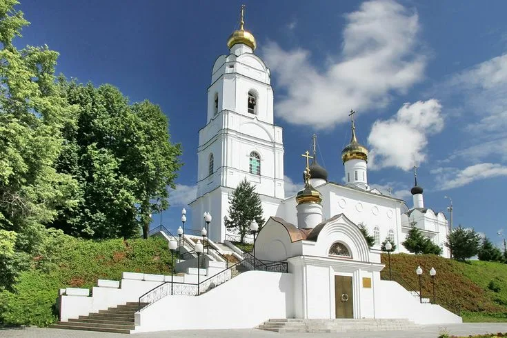
Главный храм города, построен в 1676 году. Величественный пятиглавый собор с уникальным иконостасом.
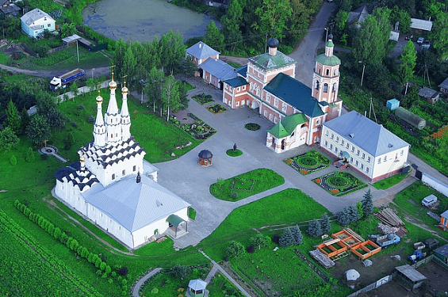
Обитель основана в 1535 году. Один из древнейших монастырей Смоленщины.
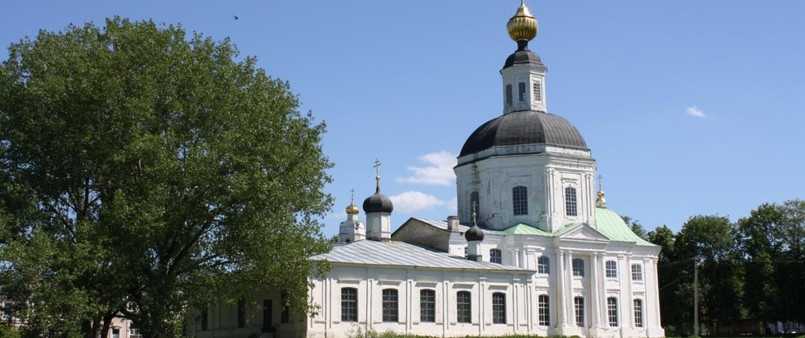
Богатейшая экспозиция по истории Вяземского края. Археология, быт, война.
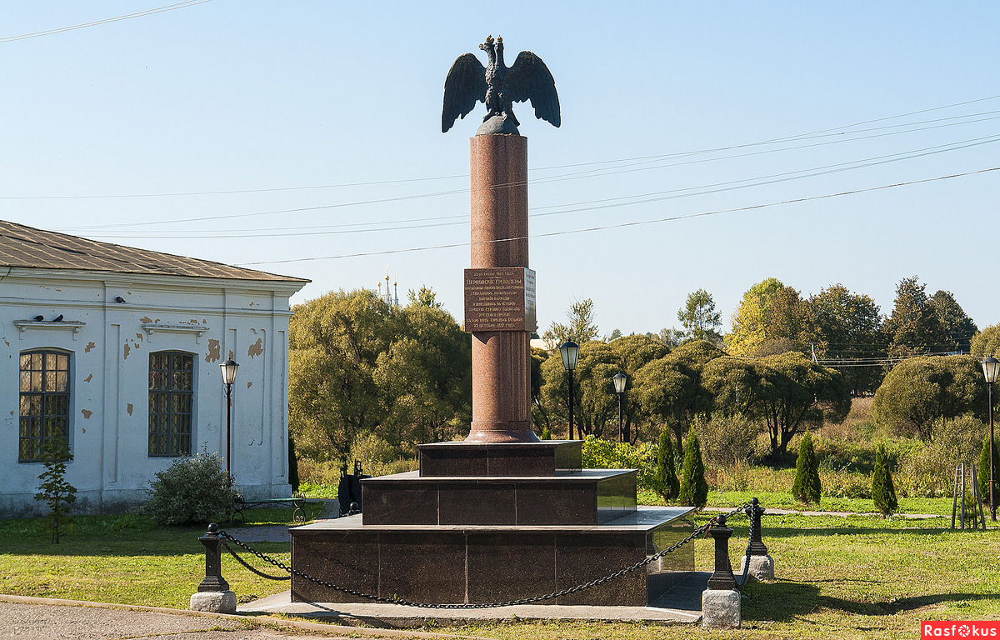
Обелиск в честь подвига Перновского полка.
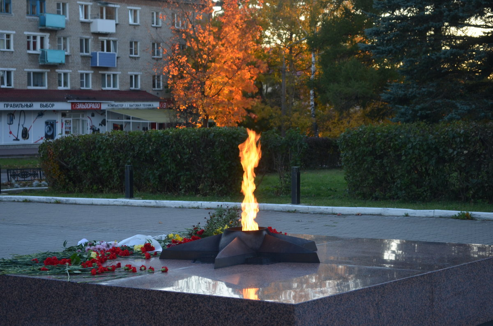
Мемориал воинской славы, посвящённый героям Великой Отечественной войны.
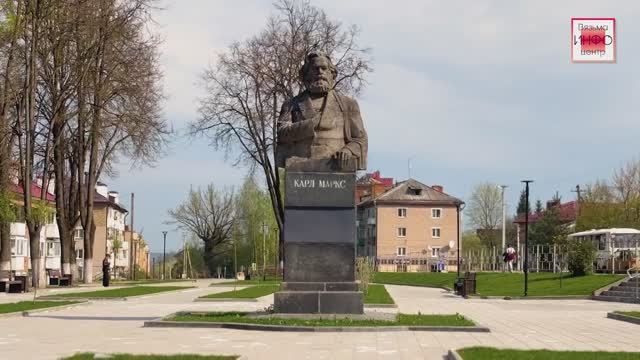
Уютный городской сквер для спокойных прогулок и отдыха.
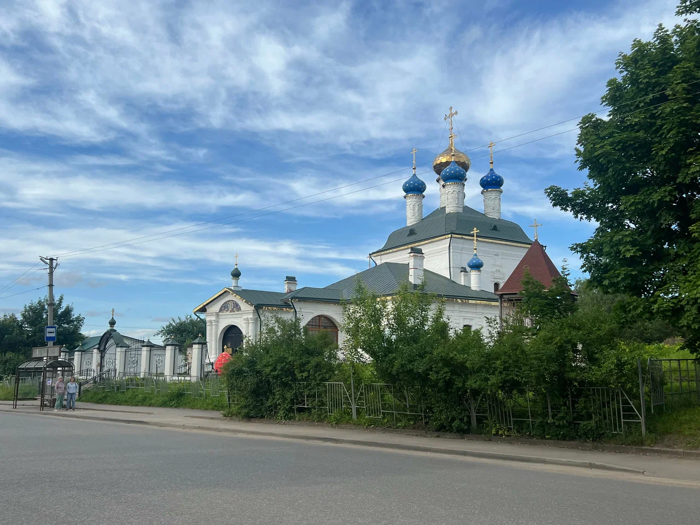
Старинный храм с красивым иконостасом и колокольней.
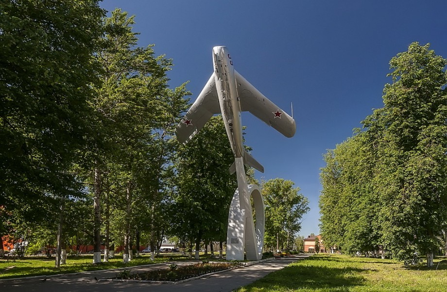
Большой, ухоженый сквер с большим количеством растительности и лавок. В начале сквера размещён настоящий МиГ-17 Савицкой.
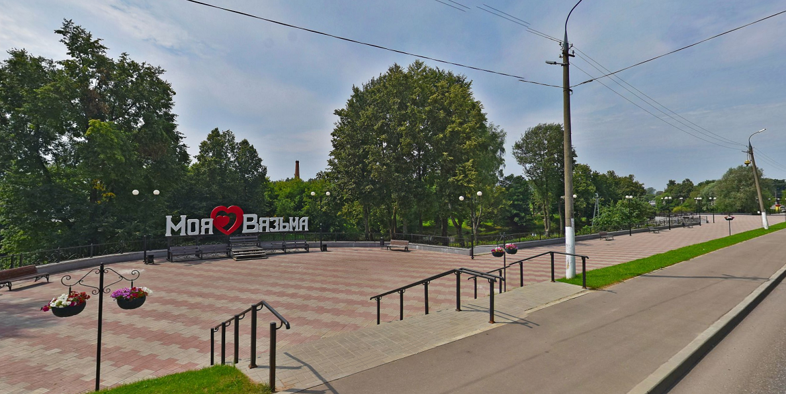
Живописная набережная. Идеально для прогулок.
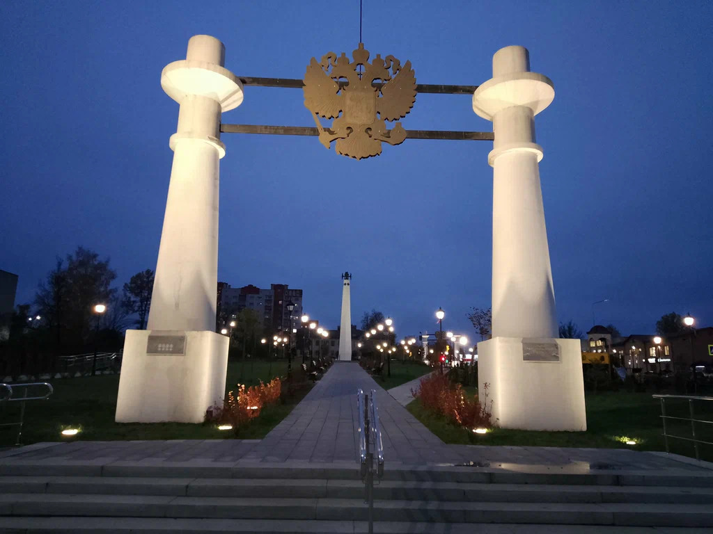
Мемориальный сквер, посвящённый героям Первой мировой войны.
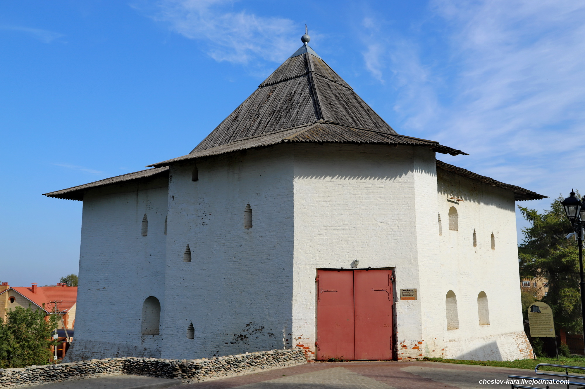
Историческая башня, часть бывшего крепостного вала. Единственная уцелевшая башня из 6.
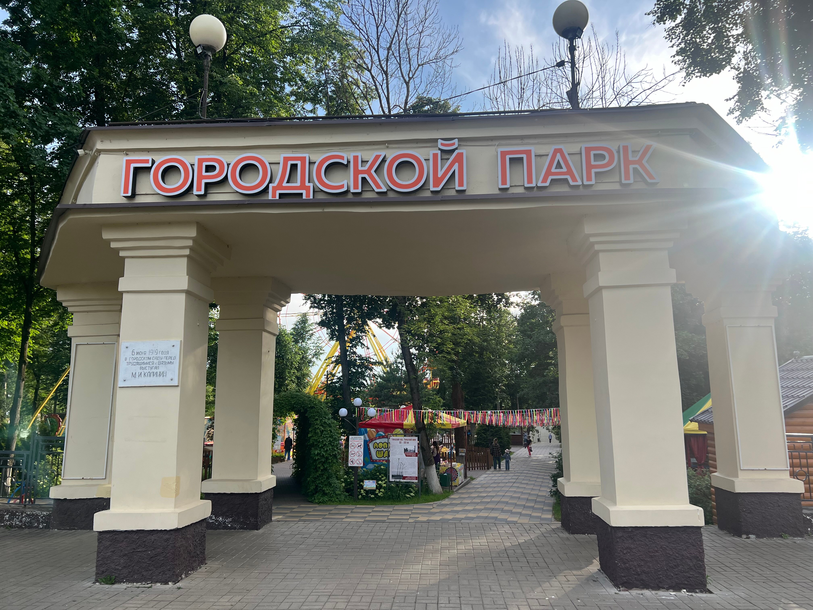
Центральный парк города. Любимое место для прогулок, отдыха и семейных мероприятий.